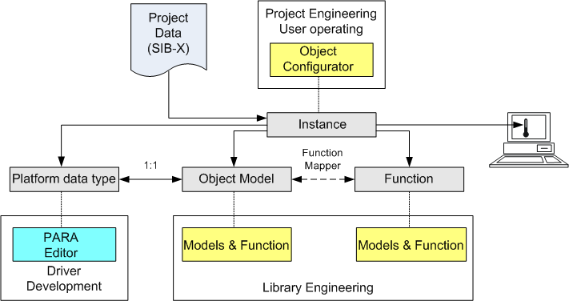

Function Concept

The Function concept impacts the following main elements:
Platform Data Type | It forms the basis for the Object Model set up on Desigo CC (no longer described in detail). Platform tools are required in individual cases for driver development of additional subsystems. |
Object Model | All Desigo CC basic data types are designated Object Models. The corresponding default value is defined per subsystem for each Object Model. |
Function | Function includes the semantic description (for example, fire detector or temperature sensor) for one or more specific data points. |
Instances | Imported project data can be modified specifically to the instance using the Object Configurator. |
Project Data | The project data (SiB-X) contains the specific information on a data point or data point amount by the system and is responsible for Desigo CC response. The Function or Object Model supplements missing information on a project data point to ensure uniform functioning of Desigo CC. Instance-specific modifications are possible using the Object Configurator. |
The tree structure ensures a consistent operating, commanding and alarming philosophy for the various integrated subsystems. The benefits of this concept include:
- Discipline-specific project data from fire, HVAC, intrusion, and so on can be configured using the same mechanism.
- Additional or new systems can be easily added. It can be accomplished at Vendor’s HQ or the appropriate regional companies as well as for customized integrations.